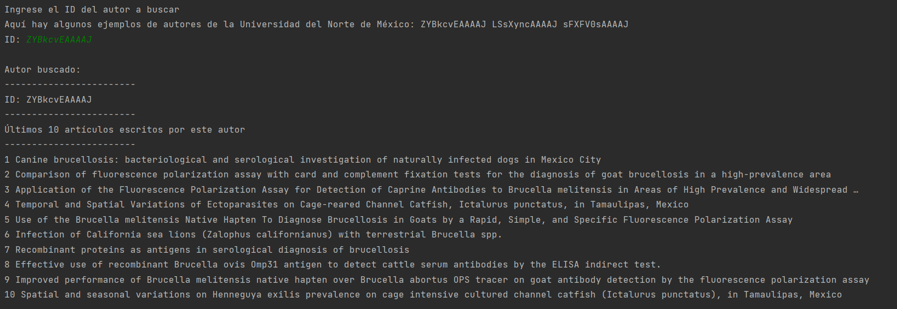
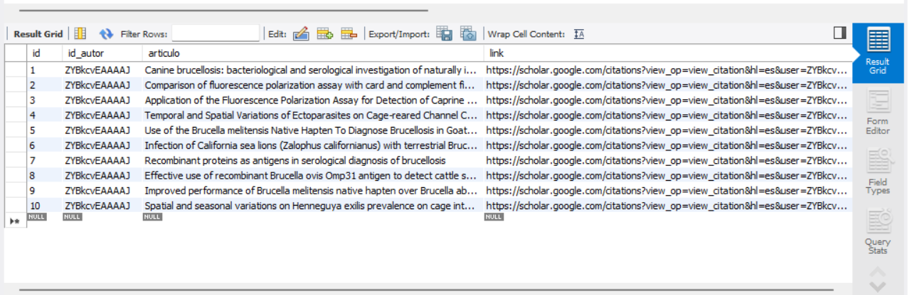

La API de Google Scholar permite tener acceso a la base de datos de Google Scholar, una base de datos con trabajos académicos y científicos. Cubre diferentes áreas, como estudios de la salud, sociales, etc., y por ello es muy útil para el propósito del proyecto del dream team. Además, brinda información sobre trabajos académicos, como artículos, tesis y patentes, así como también sobre los autores y las revistas científicas.
El dream team utilizará Google Scholar Author como motor de búsqueda, y el request necesario para acceder a esa API es de tipo GET, utilizando como baseURL “https://serpapi.com/search?engine=google_scholar_author”. Sin embargo, esto no es suficiente, pues el request necesita ciertos parámetros que detallo a continuación:
La Google Scholar API admite varios query params, que permiten personalizar la búsqueda. Algunos de los más comunes son los siguientes:
api_key: Se necesita tener una clave de la API.q: Hace referencia a la cadena de búsqueda.author_id: Es el ID del autor a buscar.engine: Como ya dijimos, el URL debe contener
"engine=google_scholar_author".
También utilizaremos otros parámetros, aunque no son estrictamente necesarios:
hl: Para especificar el idioma. En el caso de español
latinoamericano, es "es-419".
num: Para limitar el número de resultados.La petición que podemos realizar a la Google Scholar Author API es de tipo GET, utilizando la baseURL que detallamos anteriormente, sumado a los parámetros que deseamos agregar, finalmente el endpoint sería:
https://serpapi.com/search?engine=google_scholar_author&q={authorId}&autho_id={authorId}&hl=es-419&num=10&api_key={apiKey}
La respuesta de la Google Scholar Author API puede encontrarse en dos
formatos diferentes: json o
html. Por defecto vendrá en formato JSON, pero si quisiéramos la respuesta
en HTML, basta con agregar un parámetro más, llamado
output. Para obtener el HTML en bruto recuperado, el código es el siguiente
&output=html.
La parte de la respuesta que necesitamos es a partir del array de
objetos
articles, que se ve de la siguiente manera:
{
"articles": [
{
"title": "Model-based analysis of ChIP-Seq (MACS)",
"link": "https://scholar.google.com/citations?view_op=view_citation&hl=fr&user=LSsXyncAAAAJ&citation_for_view=LSsXyncAAAAJ:2osOgNQ5qMEC",
"citation_id": "LSsXyncAAAAJ:2osOgNQ5qMEC",
"authors": "Y Zhang, T Liu, CA Meyer, J Eeckhoute, DS Johnson, BE Bernstein, ...",
"publication": "Genome biology 9 (9), 1-9, 2008",
"cited_by": {
"value": 9186,
"link": "https://scholar.google.com/scholar?oi=bibs&hl=fr&cites=14252090027271643524",
"serpapi_link": "https://serpapi.com/search.json?cites=14252090027271643524&engine=google_scholar&hl=en"
},
"year": "2008"
}
...
],
}
Para el propósito del dream team, iteraremos sobre el array de objetos
articles, devolviendo una respuesta en formato JSON.
Luego de correr nuestra aplicación de consola, se le pedirá al usuario que ingrese el ID del autor que desea buscar, dejando algunos ejemplos a la mano. Al ingresar un ID y dar Enter, obtendremos la respuesta (hasta 10 resultados):

Finalmente, estos últimos 10 artículos del autor buscado se guardarán en la base de datos MySQL de la siguiente manera:
